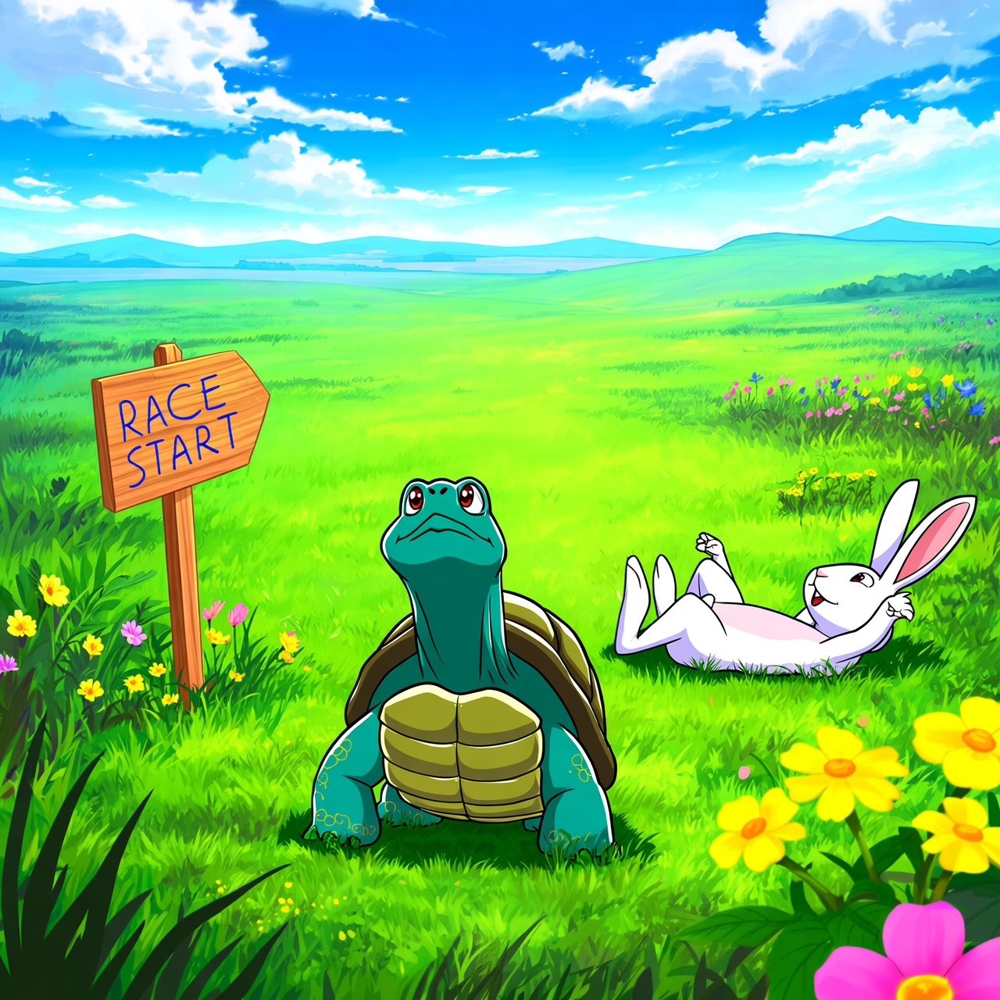
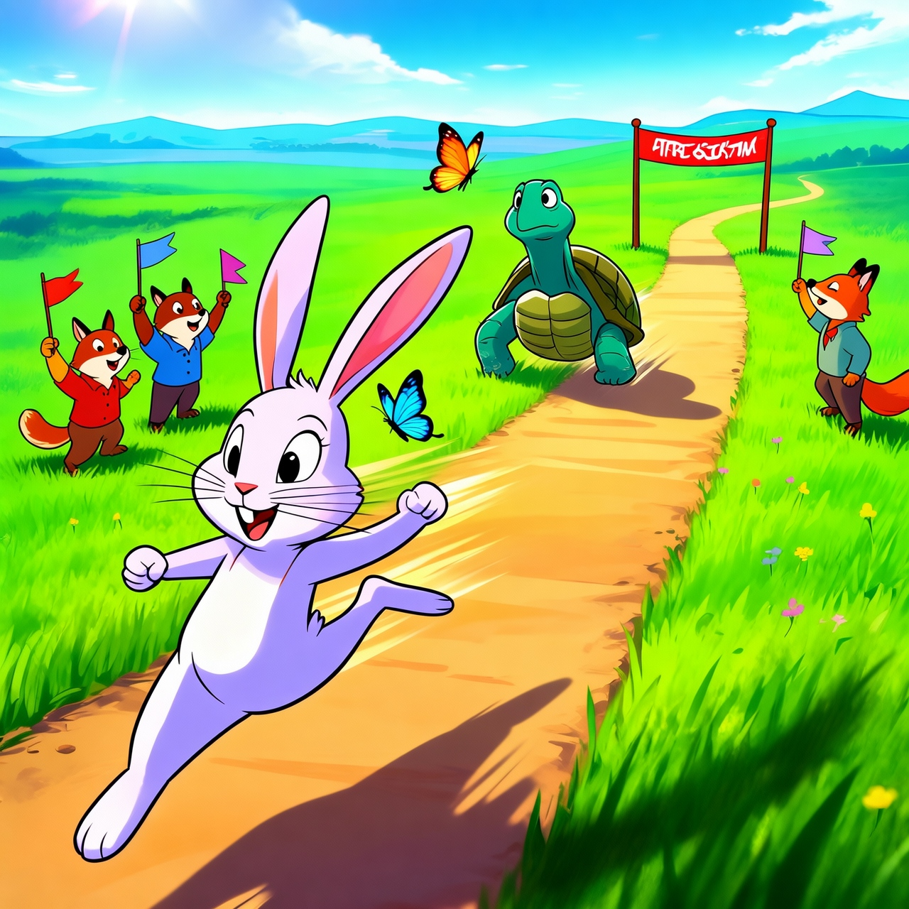
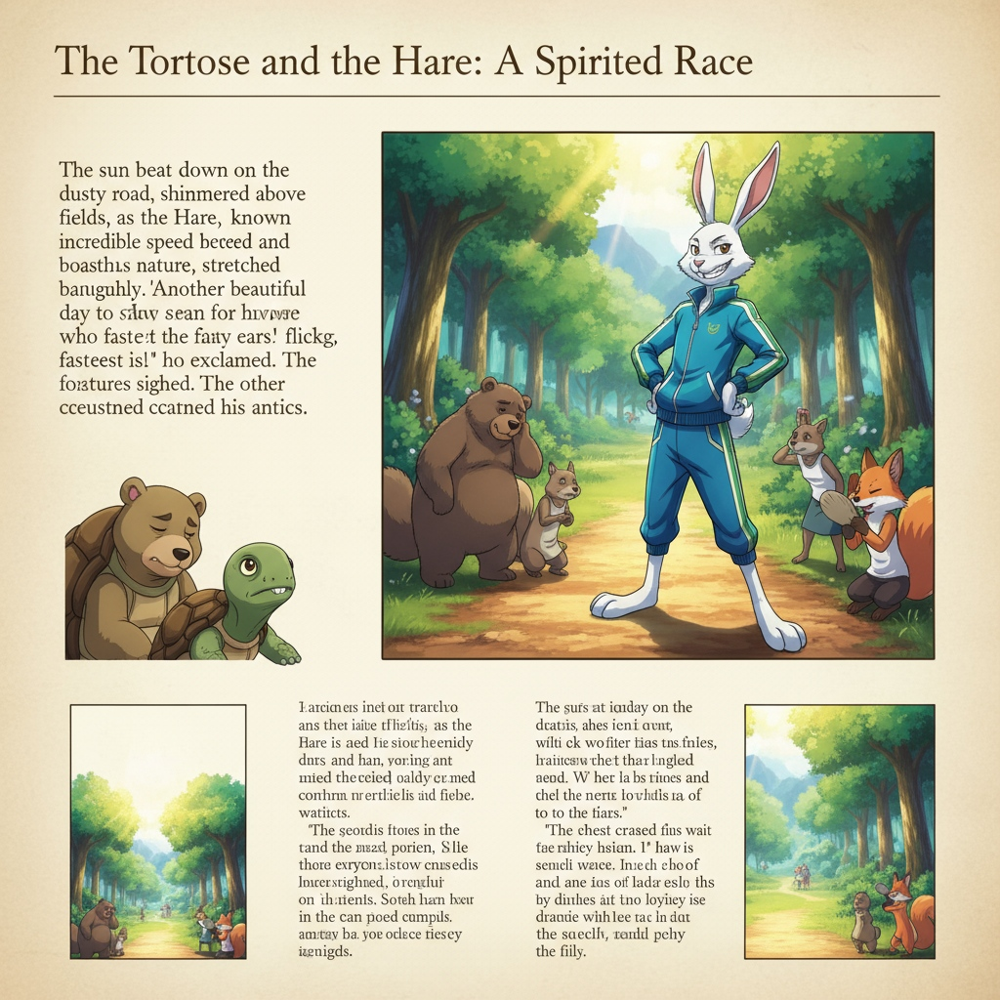
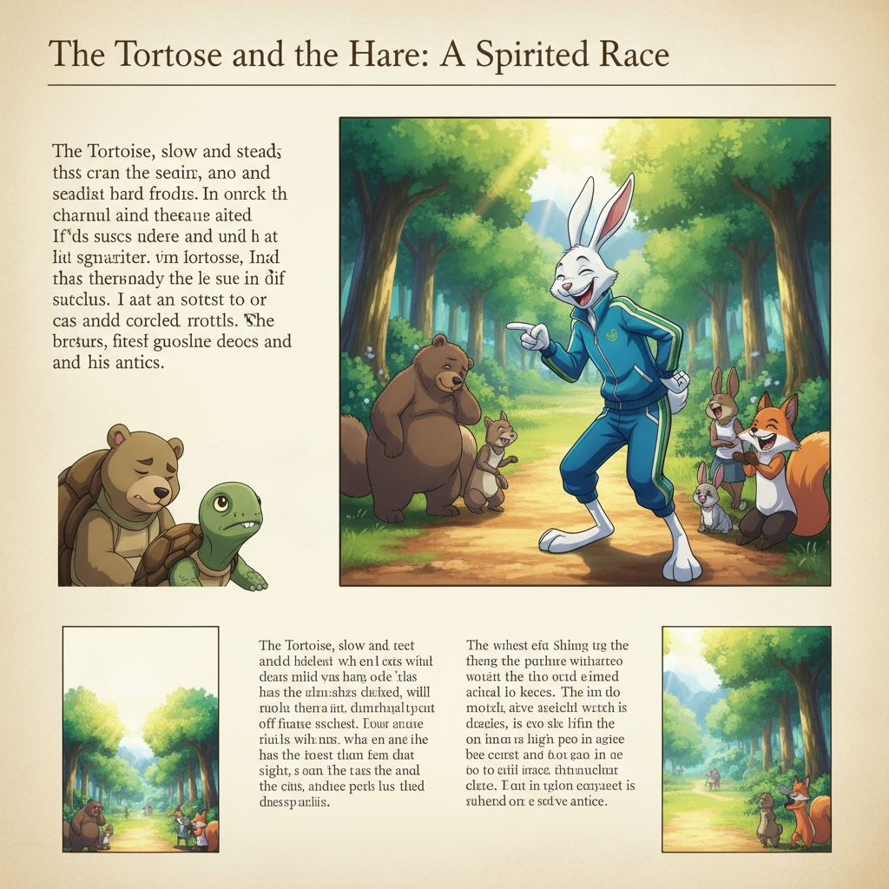
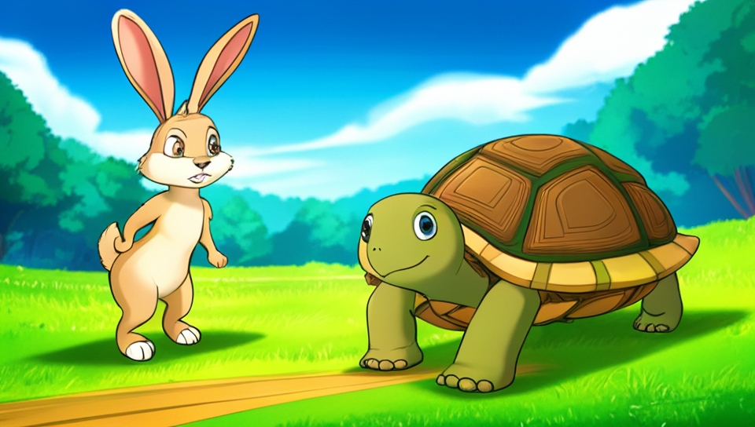
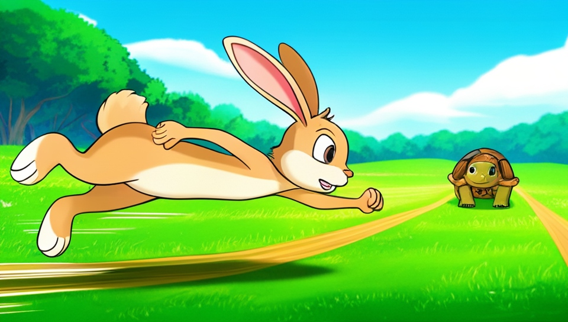
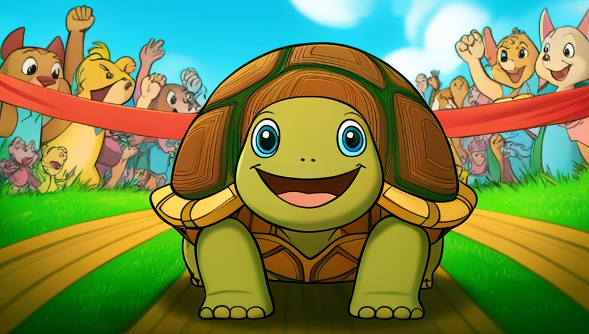
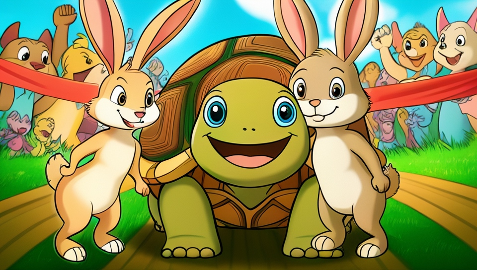

Recent unified models have made unprecedented progress in both understanding and generation. However, while most of them accept multi-modal inputs, they typically produce only single-modality outputs. This challenge of producing interleaved content is mainly due to training data scarcity and the difficulty of modeling long-range cross-modal context. To address this issue, we decompose interleaved generation into textual planning and visual consistency modeling, and introduce a framework consisting of a planner and a visualizer. The planner produces dense textual descriptions for visual content, while the visualizer synthesizes images accordingly. Under this guidance, we construct large-scale textual-proxy interleaved data (where visual content is represented in text) to train the planner, and curate reference-guided image data to train the visualizer. These designs give rise to Wan-Weaver, which exhibits emergent interleaved generation ability with long-range textual coherence and visual consistency. Meanwhile, the integration of diverse understanding and generation data into planner training enables Wan-Weaver to achieve robust task reasoning and generation proficiency. To assess the model’s capability in interleaved generation, we further construct a benchmark that spans a wide range of use cases across multiple dimensions. Extensive experiments demonstrate that, even without access to any real interleaved data, Wan-Weaver achieves superior performance over existing methods.
Select a case below to compare the interleaved text-image generation results across different methods.
Prompt: Create an article where narrative paragraphs and consistent anime-style illustrations are woven together seamlessly about "The Tortoise and the Hare".
The story begins in a sun-drenched meadow where the Tortoise, slow but steady, announces a race against the Hare, who laughs at the idea.

The race begins with a shout, and the Hare darts forward like a streak of lightning while the Tortoise plods along, each step measured and sure.

Midway through the course, the Hare, certain of victory, hops into a shady tree and drifts into a nap, while the Tortoise keeps moving, undeterred by fatigue.
At last, the Tortoise reaches the finish line, greeted by cheers, while the Hare awakens to the shocking sight of the slow competitor already triumphant.
The moral is clear: confidence without diligence can falter, while steady effort can conquer even the swiftest rival. The meadow quiets as the sun sets, and the animals reflect on the lesson that patience and perseverance often outrun pride and haste.
The sun beat down on the dusty road, shimmered above the fields, as the Hare, known for his incredible speed and boastful nature, stretched languidly. "Another beautiful day to show everyone who the fastest is!" he exclaimed, flicking his ears. The other forest creatures sighed, accustomed to his antics.

The Tortoise, slow and steady, but possessed of an unwavering spirit, happened to be nearby, enjoying a peaceful munch on some clover. He looked up, his ancient eyes twinkling. "Perhaps not everyone, friend Hare," he said in a calm, measured voice. "I believe I could give you a run for your money."
A ripple of laughter went through the small crowd of animals. The Hare, initially stunned, soon erupted in uproarious guffaws. "You? Race me? That's the funniest thing I've heard all year, old-timer!" he chortled, wiping a tear from his eye. "Very well, then. Let's set a course. From the big oak to the whispering willow, and back again!"

Once upon a time, in a forest filled with tall trees and winding streams, lived two friends named Tortoise and Hare. Tortoise was slow-moving, but he was also determined and always finished whatever task he began. Hare, on the other hand, was fast and confident, but he didn't always finish what he started.
One day, while wandering through the forest, Tortoise and Hare came across a race track. Tortoise decided to enter the race, and to his surprise, he won. Hare was furious and decided to enter the race as well, but he underestimated Tortoise and didn't put in the effort he needed to win.
As the race began, Hare quickly took the lead, but Tortoise kept a steady pace and never gave up. Hare didn't want to be outpaced by a humble tortoise, so he pushed himself to run even faster, but he became so exhausted that he slowed down and let Tortoise catch up to him.
In the end, Tortoise won the race and proved that hard work and perseverance can overcome even the fastest competitor. Hare learned a valuable lesson about the importance of effort and determination, and from that day forward, he and Tortoise became the best of friends.
Once upon a time, in a lush meadow beneath a bright blue sky, lived a hare known for his incredible speed and a tortoise celebrated for his steady, unwavering pace. The hare, full of pride, often mocked the tortoise for his slowness, while the tortoise, though patient, dreamed of proving his worth.

One sunny morning, the hare challenged the tortoise to a race, confident he would win easily. The animals gathered to watch as the hare darted ahead, leaving the tortoise far behind. The hare, feeling smug, soon grew tired and decided to rest under a shady tree, certain the tortoise would never catch up.

As the hare slept, the tortoise kept moving, step by steady step. He didn’t rush; he simply kept going, driven by quiet determination. The other animals watched, some amused, others hopeful.
When the hare awoke, he was shocked to see the tortoise near the finish line. He sprinted with all his might, but it was too late—the tortoise had already crossed. The animals cheered as the tortoise, exhausted but triumphant, reached the end. The hare, humbled, realized that steady effort can overcome even the greatest speed.

From that day on, the hare learned the value of humility and consistency, while the tortoise was celebrated for his perseverance. The animals of the meadow often told the tale of the tortoise and the hare, a reminder that slow and steady can win the race.

Once upon a time, in a land far, far away, there was a wise old man who lived in a small village nestled in the rolling hills of a lush forest. The villagers revered the old man for his wisdom and sought his guidance on all matters, both great and small.
One day, a young tortoise named Tom came to the wise old man seeking his counsel. Tom was a slow and steady creature, content to take things one step at a time and enjoy the journey. But Tom was also a bit curious and restless, always eager to explore new horizons and discover new things.
The wise old man listened to Tom's tale and smiled. He knew that Tom was not like the other creatures in the forest, who were quick and nimble, always rushing to get wherever they were going. No, Tom was different, and the wise old man knew that this was something to be celebrated, not condemned.
"You, my young friend, are a tortoise," the wise old man said. "And tortoises are slow, but they are also strong and determined. You must not compare yourself to others, for that is a road that leads to disappointment and discouragement. Instead, focus on your own strengths and weaknesses, and use them to your advantage."
And with that, the wise old man taught Tom a valuable lesson. From that day on, Tom the tortoise began to see the world in a new light. He no longer felt the need to rush or compete with others, but rather to simply enjoy the journey and let his own pace guide him.
And as the years passed, Tom the tortoise became known throughout the land for his wisdom and kindness. He was loved and respected by all who knew him, and his slow and steady pace became a symbol of perseverance and determination.
In the end, it was not the winner of the race who mattered, but the journey itself. And for Tom the tortoise, that journey was filled with joy, peace, and a deep understanding of the true meaning of wisdom.
And so, the story of Tom the tortoise and the wise old man teaches us that it is not always the fastest or the strongest who succeed, but rather those who are willing to slow down and appreciate the journey.
Wan-Weaver decomposes interleaved generation into textual planning and visual consistency modeling. The planner is trained on textual-proxy data to generate dense visual guidance, while the visualizer is trained on reference-guided data to ensure visual consistency across the generated sequence.
Results on the OpenING Benchmark for interleaved generation.
| Method | Completeness | Quality | Richness | Correctness | Human Align. | IT Coherency | Multi-step Consist. | Overall |
|---|---|---|---|---|---|---|---|---|
| NExT-GPT | 3.89 | 4.25 | 3.35 | 3.61 | 5.35 | 3.32 | 3.85 | 3.95 |
| MiniGPT-5 | 3.91 | 4.50 | 3.61 | 3.63 | 5.51 | 3.56 | 4.10 | 4.12 |
| Orthus | 4.43 | 4.30 | 3.71 | 4.15 | 4.80 | 3.51 | 4.20 | 4.16 |
| Show-o | 4.37 | 4.79 | 3.83 | 3.76 | 5.78 | 4.04 | 4.33 | 4.41 |
| VILA-U | 5.60 | 5.14 | 4.68 | 4.78 | 5.69 | 4.74 | 4.79 | 5.06 |
| SEED-LLaMA | 5.59 | 5.50 | 4.61 | 4.59 | 6.50 | 4.43 | 5.13 | 5.19 |
| Anole | 6.27 | 6.02 | 5.28 | 5.06 | 6.91 | 4.90 | 5.81 | 5.75 |
| Emu3 | 5.90 | 5.96 | 5.52 | 5.43 | 6.47 | 5.66 | 5.37 | 5.76 |
| SEED-X | 5.65 | 6.07 | 4.92 | 5.77 | 7.03 | 5.72 | 5.72 | 5.84 |
| Gemini+Flux | 7.58 | 7.26 | 6.48 | 7.03 | 7.98 | 6.98 | 7.33 | 7.23 |
| GPT-4o+DALL-E3 | 8.66 | 8.01 | 7.42 | 7.98 | 8.77 | 8.15 | 8.38 | 8.20 |
| Nano Banana | 9.34 | 8.58 | 8.00 | 9.17 | 8.88 | 9.27 | 8.70 | 8.85 |
| Wan-Weaver (Ours) | 9.41 | 8.32 | 8.03 | 8.90 | 8.69 | 8.78 | 8.56 | 8.67 |
We introduce WeaverBench, a comprehensive benchmark for evaluating open-ended interleaved image-text generation, covering a wide range of daily use cases including design, education, reporting, and more.
| Method | Prompt Adherence (PA) | Narrative Coord. (NC) | Content Consist. (CC) | Image Consist. (IC) | Completeness (CP) | Overall |
|---|---|---|---|---|---|---|
| Orthus | 2.47 | 1.88 | 1.69 | 1.51 | 1.91 | 1.89 |
| Anole | 4.14 | 3.76 | 3.77 | 3.42 | 3.64 | 3.74 |
| Emu3.5 | 7.65 | 7.55 | 7.56 | 7.50 | 7.41 | 7.53 |
| Nano Banana | 8.53 | 8.19 | 8.53 | 8.38 | 8.29 | 8.38 |
| Wan-Weaver (Ours) | 8.71 | 8.33 | 8.50 | 8.13 | 8.46 | 8.43 |
| Model | Understanding | Image Generation | Image Editing | |||
|---|---|---|---|---|---|---|
| MMMU | MathVista | GenEval | DPG | ImgEdit | GEdit-EN | |
| InternVL3-38B | 69.7 | 76.3 | -- | -- | -- | -- |
| Ovis2-34B | 66.7 | 76.1 | -- | -- | -- | -- |
| Qwen2.5-VL-32B† | 75.1 | 84.7 | -- | -- | -- | -- |
| FLUX.1-dev | -- | -- | 0.66 | 84.0 | -- | -- |
| Step1X-Edit | -- | -- | -- | -- | 3.06 | 6.70 |
| Unified Models | ||||||
| Bagel | 55.3 | 73.1 | 0.88 | 85.07 | 3.20 | 6.52 |
| UniWorld-V1 | 58.6 | -- | 0.84 | 81.38 | 3.26 | 4.85 |
| Wan-Weaver (Ours) | 74.9 | 84.3 | 0.89 | 87.21 | 4.31 | 7.39 |
Text-to-Image (T2I)
Image-to-Image (I2I)
@inproceedings{xing2026wanweaver,
title={Wan-Weaver: Interleaved Multi-modal Generation via Decoupled Training},
author={Xing, Jinbo and Jiang, Zeyinzi and Tuo, Yuxiang and Mao, Chaojie and Gai, Xiaotang and Chen, Xi and Zhang, Jingfeng and Pan, Yulin and Han, Zhen and Xiao, Jie and Yan, Keyu and Xie, Chenwei and Zhong, Chongyang and Zhu, Kai and Shen, Tong and Huang, Lianghua and Liu, Yu and Yang, Yujiu},
booktitle={Proceedings of the IEEE/CVF Conference on Computer Vision and Pattern Recognition},
year={2026}
}